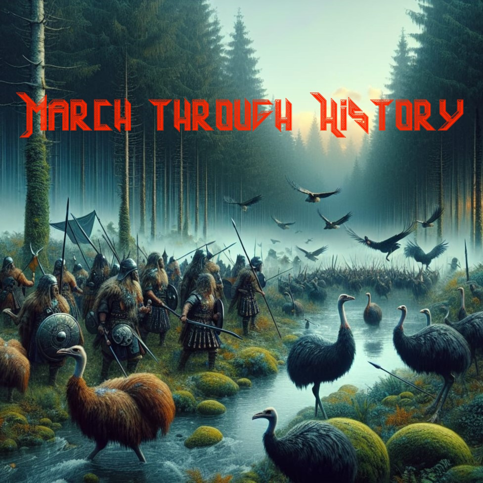

Started in 2024, Histronica is a project that seeks to innovate the use of AI in the heavy metal scene. The aim is not to be better than real artists, or to even take their place, but instead to explore the possibilities of technology in contact with the greatest music community of all, the metal community! Currently the Udio v1 AI is the AI-of-choice for the project. This project was inspired by many great bands, but most notably Sabaton and Powerwolf, so a big thanks goes out to them for the inspiration.
Histronica's first release of five songs, titled "March through History" is out now! You can listen to it here on Youtube!
Here you can find the lyrics and backstory for every song of "March through History"
Youtube: https://www.youtube.com/@Histronica
E-Mail: histronica.metal@gmail.com
Linktr.ee: https://linktr.ee/histronica
"March of the Saxons" celebrates the bravery and history of the Kingdom of Saxony and the people that lived on its land before and after it.
"March of the Emu Legions" tells the story of Australias Emu war. In 1932 the australian military was tasked with decimating the emu population in the Campion district of Western Australia. But the soldiers were unsuccesful and the operation, also known as the Great Emu War, went down in history as that time Australia lost a war against some birds.
More Information: https://en.wikipedia.org/wiki/Emu_War
"Echoes of Teutoburg" is about the battle of Teutoburg Forest, where germanic tribes decisively defeated three roman legions with the help of Arminius, who had received roman military training, and therefore anticipated the tactical response of the romans.
More Information: https://en.wikipedia.org/wiki/Battle_of_the_Teutoburg_Forest
"Zulu Warcry" is inspired by the Anglo-Zulu War of 1879, which saw the famous battle of Rorke's Drift (Shout-out to Sabaton's song Rorke's Drift for insipring the topic) amongst many other. After the repelling of the first british invasion, the second one marked the Zulu Kingdoms fate.
More Information: https://en.wikipedia.org/wiki/Anglo-Zulu_War